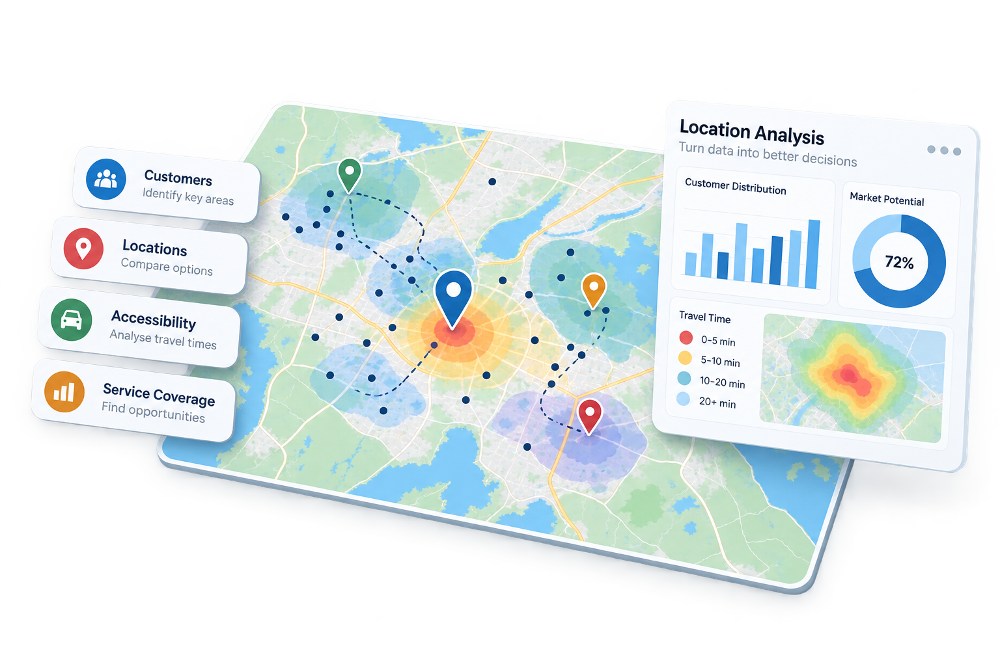

Kundområden
Förstå var dina kunder finns, identifiera geografiska mönster och upptäck områden med potentiell efterfrågan.
GIS-ANALYS
Omvandla geografiska data till praktiska affärsinsikter. Förstå kunder, tillgänglighet, servicetäckning och potentiella möjligheter med hjälp av platsbaserad analys.

VAD VI KAN ANALYSERA
Platsanalys kombinerar geografiska data med affärsinformation för att upptäcka mönster som kan vara svåra att se i tabeller eller listor.
Förstå var dina kunder finns, identifiera geografiska mönster och upptäck områden med potentiell efterfrågan.
Jämför potentiella etableringsplatser utifrån geografiska faktorer som omgivande områden, tillgänglighet och närhet till kunder.
Analysera hur enkelt kunder kan nå ditt företag, dina tjänster eller anläggningar från olika platser.
Visualisera var ditt företag är verksamt idag och identifiera områden där täckningen potentiellt kan förbättras.
Kartlägg närliggande företag, tjänster och andra relevanta platser för att få en bättre förståelse för den lokala marknaden.
Kombinera geografisk information med företagets behov för att identifiera områden som kan vara intressanta för expansion eller förbättrad service.
VARFÖR PLATSANALYS?
Kartor kan synliggöra kundkluster, luckor i servicetäckningen och geografiska samband som är svåra att upptäcka i kalkylblad.
Utvärdera olika platser utifrån tillgänglighet, närliggande tjänster, kunder och andra geografiska faktorer.
Använd platsbaserad information som stöd för expansion, serviceplanering och smartare affärsbeslut.
HAR DU EN PLATSBASERAD FRÅGA?
Oavsett om du vill förstå dina kunder, jämföra potentiella företagslägen, analysera servicetäckning eller identifiera nya möjligheter kan vi skapa en platsanalys utifrån ditt företags behov.
Diskutera ditt projekt →